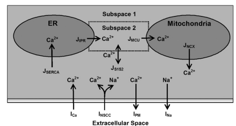

"A Biophysically Based Mathematical Model of Unitary Potential Activity in
Interstitial Cells of Cajal"
10.1529/biophysj.107.122507
The original CellML model is divided into eighteen sub-modules presenting a modularized version of various ion channels.
Unitary potential (UP) depolarizations are the primary intracellular events responsible for pacemaker activity in interstitial cells of Cajal (ICCs) and are generated at intracellular sites termed pacemaker units. In the current study, the authors present a mathematical model of the transmembrane ion flows and intracellular Ca2+ dynamics from a single ICC pacemaker unit acting at near-resting membrane potential. This model quantitatively formalizes the framework of a novel ICC pacemaking mechanism that has recently been proposed. The model predicts that the main inward currents, carried by a Ca2+-inhibited nonselective cation conductance, are activated by depletion of sub-plasma-membrane [Ca2+] caused by sarcoendoplasmic reticulum calcium ATPase Ca2+ sequestration. Furthermore, pacemaker activity predicted by the current model persists under simulated voltage clamp and is independent of [IP3] oscillations.
 Schematic diagram.
Schematic diagram of the ICC pacemaker unit showing all the components involved in the modelling framework. The ionic conductances and their respective interactions with the intracellular organelles and cytoplasmic subspaces are displayed. The four compartmental volumes comprising the pacemaker unit are
The model is implemented using a Hodgkin-Huxley type formulation. The cell membrane lipid bilayer is represented as a capacitance (Cm), and the ion channels in the membrane are represented as conductance. The change in the transmembrane potential (Vm) over time depends on the sum of the individual ion currents through each class of ion channel in the cell current:
Where there are five different ion channels that regulate cellular electrophysiology:
The five Ca2+ fluxes responsible for controlling intracellular Ca2+ movement are